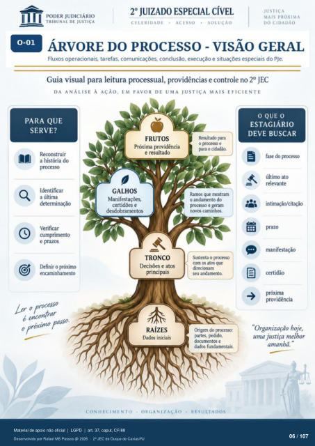

Transcrição automática em português, ainda não revisada. Confira grafia, prazos e termos jurídicos na imagem e no PDF antes de utilizar.
II
ÁRVORE DO PROCESSO - VISÃO GERAL
Fluxos operacionais, tarefas, comunicações. conclusão, execução e situações especiais do PJe. Guia visual para leitura processual, providências e controle no 20 JEC
DA ANÁLISE À AÇÃO, EM FAVOR DE UMA JUSTIÇA MAIS EFICIENTE
PARA QUE
SERVE?
Reconstruir a história do
Identificar a última
determinação Verificar
cumprimento e prazos
encaminhamento é Otccntrar
FRUTOS
Próxima providência e resultado
Resultado para o prcxesso e
para o cidadão. Ramos que mostram
o andamento do e geram
novos caminhos. Sustenta o prcxesso
com os atos que direcionam
seu andamento. Origem do prcxesso:
partes, documentos e
dados fundamentais.
RESULTADOS
O QUE O
ESTAGIÁRIO
DEVE BUSCAR
fase do prcxesso último ato
relevante 4
GALHOS
Manifestações, certidões e
desdobramentos
TRONCO
Decisões e atos principais
9 intimação/citaçào
prazo manifestação
próxima providência
RAÍZES
Dados iniciais
• ORGANIZAÇÃO •
CONHECIMENTO
"Organização hoje, uma justiça melhor
amanhã. "
Ver também o infográfico original (página 6)
